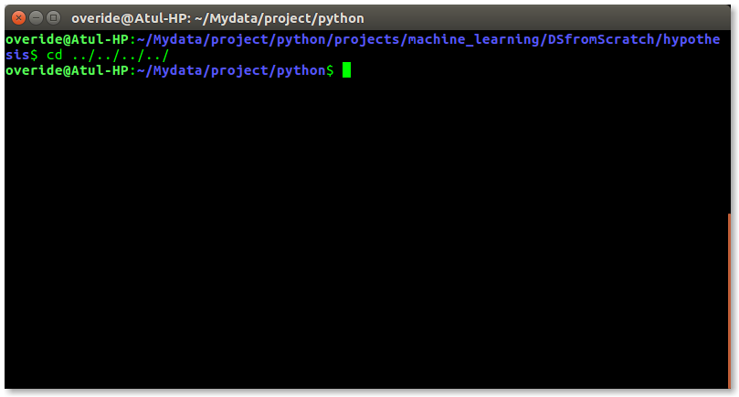
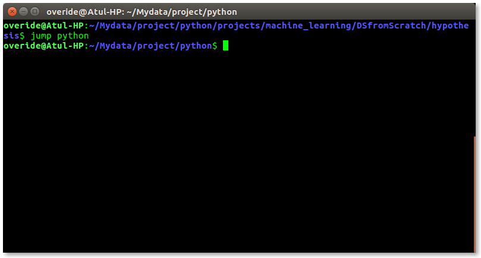

如果您使用的是任何主要操作系统，则您间接与shell进行交互。 如果您运行的是Ubuntu，Linux Mint或任何其他Linux发行版，那么每次使用终端时都要与shell进行交互。 在本文中，我将讨论Linux shell和shell脚本，因此在理解shell脚本之前，我们必须熟悉以下术语 -
- 核心
- 贝壳
- 终奌站
- 文件管理
- 流程管理
- I / O管理
- 内存管理
- 设备管理等
- 命令行Shell
- 图形外壳
- BASH（Bourne Again SHell） - 它是Linux系统中使用最广泛的shell。 它在Linux系统和macOS中用作默认登录shell。 它也可以安装在Windows操作系统上。
- CSH（C SHell） - C shell的语法和用法与C编程语言非常相似。
- KSH（Korn SHell） - Korn Shell也是POSIX Shell标准规格等的基础。
- Shell关键字 - if，else，break等
- Shell命令 - cd，ls，echo，pwd，touch等。
- 功能
- 控制流程 - if..then..else，case和shell循环等。
- 避免重复工作和自动化
- 系统管理员使用shell脚本进行例行备份
- 系统监控
- 向shell等添加新功能
- 命令和语法与直接在命令行中输入的命令和语法完全相同，因此程序员不需要切换到完全不同的语法
- 编写shell脚本要快得多
- 快速开始
- 交互式调试等
- 容易出现代价高昂的错误，单个错误可能会改变可能有害的命令
- 执行速度慢
- 设计语言语法或实现中的缺陷
- 不适合大型复杂的任务
- 与其他脚本语言不同，提供最小的数据结构。 等等
什么是内核
内核是计算机程序，是计算机操作系统的核心，可以完全控制系统中的所有内容。 它管理Linux系统的以下资源 -
- Linus Torvalds开发Linux操作系统经常是错误的，但实际上他只负责Linux内核的开发。
完整的Linux系统=内核+ GNU系统实用程序和库+其他管理脚本+安装脚本。
什么是壳牌
shell是一种特殊的用户程序，它为用户提供了使用操作系统服务的接口。 Shell接受来自用户的人类可读命令并将其转换为内核可以理解的内容。 它是一种命令语言解释器，用于执行从键盘或文件等输入设备读取的命令。 当用户登录或启动终端时，shell将启动。

linux shell
壳牌大致分为两类 -
命令行Shell
用户可以使用命令行界面访问Shell。 提供了一个名为Linux / macOS中的终端或Windows操作系统中的命令提示符的特殊程序，用于输入人类可读命令，如“cat”，“ls”等，然后执行。 然后将结果显示在终端上给用户。 Ubuntu 16.4系统中的终端看起来像这样 -

linux命令行
在上面的屏幕截图中，执行带有“-l”选项的“ls”命令。
它将以长列表格式列出当前工作目录中的所有文件。
对于初学者来说，使用命令行shell有点困难，因为很难记住这么多命令。 它功能非常强大，它允许用户将命令存储在文件中并一起执行。 这样，任何重复性任务都可以轻松实现自动化。 这些文件通常称为Windows中的批处理文件和Linux / macOS系统中的Shell脚本。
图形壳
图形外壳提供了基于图形用户界面（GUI）操作程序的方法，允许诸如打开，关闭，移动和调整窗口大小等操作，以及在窗口之间切换焦点。 Window OS或Ubuntu OS可以被视为向用户提供GUI以与程序交互的良好示例。 用户无需为每个操作输入命令.Ubuntu系统中的典型GUI -
GUI shell
有几个shell可用于Linux系统，如 -
每个shell都执行相同的工作，但了解不同的命令并提供不同的内置函数。
Shell Scripting
通常shell是交互式的，这意味着它们接受命令作为用户的输入并执行它们。 但是有些时候我们想要定期执行一堆命令，所以我们每次都在终端中输入所有命令。
由于shell也可以从文件中获取命令作为输入，我们可以将这些命令写入文件中，并可以在shell中执行它们以避免重复性工作。 这些文件称为Shell Scripts或Shell程序 。 Shell脚本类似于MS-DOS中的批处理文件 。 每个shell脚本都以.sh文件扩展名保存，例如。 myscript.sh
shell脚本的语法与任何其他编程语言一样。 如果您有任何编程语言（如Python，C / C ++等）的经验，那么开始使用它将非常容易。
shell脚本包含以下元素 -
为什么我们需要shell脚本
编写shell脚本有很多原因 -
shell脚本的优点
shell脚本的缺点
使用Bash Shell简单演示shell脚本
如果您在终端上工作，那么您可以在目录中深入到达。 然后，为了在路径中找到几个目录，我们必须执行如下所示的命令，以进入“python”目录 -

这是非常令人沮丧的，所以为什么我们不能有一个实用程序，我们只需要键入目录的名称，我们可以直接跳转到它而不一次又一次执行“cd ../”命令。 将脚本保存为“jump.sh”
# !/bin/bash
# A simple bash script to move up to desired directory level directly
function jump()
{
# original value of Internal Field Separator
OLDIFS=$IFS
# setting field separator to "/"
IFS=/
# converting working path into array of directories in path
# eg. /my/path/is/like/this
# into [, my, path, is, like, this]
path_arr=($PWD)
# setting IFS to original value
IFS=$OLDIFS
local pos=-1
# ${path_arr[@]} gives all the values in path_arr
for dir in "${path_arr[@]}"
do
# find the number of directories to move up to
# reach at target directory
pos=$[$pos+1]
if [ "$1" = "$dir" ];then
# length of the path_arr
dir_in_path=${#path_arr[@]}
#current working directory
cwd=$PWD
limit=$[$dir_in_path-$pos-1]
for ((i=0; i<limit; i++))
do
cwd=$cwd/..
done
cd $cwd
break
fi
done
}
目前我们无法执行我们的shell脚本，因为它没有权限。 我们必须通过输入以下命令使其可执行 -
$ chmod -x path/to/our/file/jump.sh
现在要在每个终端会话上使用它，我们必须将它放在“.bashrc”文件中。
“.bashrc”是一个shell脚本，只要它以交互方式启动，Bash shell就会运行。 .bashrc文件的目的是提供一个位置，您可以在其中设置变量，函数和别名，定义我们的提示并定义我们在打开新的终端窗口时要使用的其他设置。
现在打开终端并输入以下命令 -
$ echo “source ~/path/to/our/file/jump.sh”>> ~/.bashrc
现在打开你的终端并通过输入以下命令尝试新的“跳转”功能 -
$ jump dir_name
就像下面的截图 -

用于学习Bash脚本的资源
参考